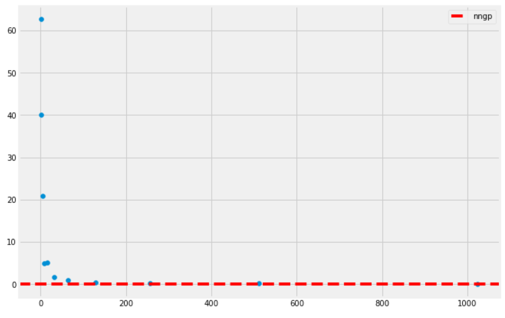

Note: This blog post is still a rough draft. Read on with caution.
In the beginning, most machine learning specialists learn about linear methods, like linear regression or its more flexible sibling, kernel regression. However, it is often discussed that such methods have expressivity limits and require heavy feature engineering to make things work out right. But deep learning could save us! Automatic feature engineering! Custom architectures to capture inductive biases! Double descent behavior!
However, the tradeoff of using these deep neural networks is the massive number of hyperparameters and tricks necessary to train the model. Often selecting a model architecture is the easiest part– the choice of optimizer, weight initializations, validation criterion etc. is enough to make anyone’s head spin. Is there a way to get the best of both worlds– the expressivity of neural networks with the ease of training of kernel methods?
In his PhD thesis, Neal showed an equivalence between certain 2-layer infinitely-wide Bayesian neural networks and kernel regression with a specific kernel. Indeed, this reduces the complexity of training such beasts to a kernel regression problem, which is often easier. In this post, we will describe this equivalence and show that it leads to good baselines for such models, without much hyperparameter tuning necessary.
kernel regression
In this section we’ll give a review of kernel regression. Let \(\mathcal{D}=\{(x_i, y_i)\}_{i=1,...,n}\) be a dataset where \(x_i\in\mathbf{R}^d\) and \(y_i\) is some scalar values. In the regression problem, we are tasked with finding a “best fit” candidate in a class of functions \(\mathcal{F}\) for the dataset \(\mathcal{D}\), where “best” is determined by finding the minimizer of a loss function
\[ f_* = \operatorname*{argmin}_{f\in\mathcal{F}}\mathcal{L}(f, \mathcal{D}) \]
Here \(\mathcal{L}(f, \mathcal{D})\) can be given by something like mean squared error
\[ \mathcal{L}(f, \mathcal{D}) = \frac{1}{|\mathcal{D}|}\sum_{(x,y)\in\mathcal{D}} \left(f(x) - y\right)^2 \]
Much of the complexity of the regression problem can be found in the choice of function class \(\mathcal{F}\). In the linear regression problem, we take \(\mathcal{F}\) to be the class of linear functions (which for simplicity, we will not consider affine functions):
\[ \mathcal{F} = \left\{f:\mathbf{R}^d\to\mathbf{R} : f(x)=wx, w\in\mathbf{R}^{1\times d}\right\} \]
In many complex datasets, this ansatz is generally very restrictive– it is rarely the case that there is an effectively linear relationship between the current features and labels in the data. However, by introducing interactions between the (independent) features we can increase the expressiveness of the resulting function class.
One simple way to introduce interactions is through polynomial relationships. This leads to polynomial regression, and the expanded function class can be written as
\[ \mathcal{F}_\text{poly} = \left\{f:\mathbf{R}^d\to\mathbf{R} : f(x)=g(x, x^{\otimes 2}, ..., x^{\otimes k}), g\text{ linear}\right\} \]
where \(\otimes\) is the ordinary vector tensor product.
Recall that over a fixed compact support \(\mathcal{C}\), elementary functional analysis tells us that polynomials are dense in the function space \(L^2(\mathcal{C})\), and so \(\mathcal{F}_\text{poly}\) for large \(k\) can approximate pretty much any function we want. So why not use it? The issue is that for large feature dimensions \(d\), and moderate \(k\), the dimensionality of the linear regression to be solved in very high. At first count, the dimension of the polynomial embedding \(x\mapsto (x, x^{\otimes 2}, ..., x^{\otimes k})\) is
\[ d + d^2 + ... + d^k = \frac{d^{k+1} - 1}{d - 1} \]
How do we then efficiently perform regression with such large embedded feature spaces? Let’s shift our perspective a bit. Consider an arbitrary feature embedding into some Hilbert space (recall this is a complete vector space with an inner product, roughly) \(\phi: \mathbf{R}^d\to\mathcal{H}\), where \(\mathcal{H}\) can be of arbitrarily large dimension (even \(\infty\)!).
Just like in the polynomial interaction space, we consider \(\mathcal{H}\) to be a space of interactions, and try and perform linear regression on this space directly. So our class of functions is given by
\[ \mathcal{F}_\phi = \left\{f:\mathbf{R}^d\to\mathbf{R}: f(x)=\langle w,\phi(x)\rangle_\mathcal{H}, w\in\mathcal{H} \right\} \]
This ansatz is a generalization of \(\mathcal{F}_\text{poly}\), but still for now has the same issues as the naive polynomial regression– how do we choose our feature space, and how do we perform the linear regression effectively?
Recall that here our loss function is given by mean squared error
\[ \mathcal{L}(w, \mathcal{D}) = \frac{1}{|\mathcal{D}|}\sum_{(x,y)\in\mathcal{D}} \left(\langle w, \phi(x)\rangle_\mathcal{H} - y\right)^2 \]
The solve the linear regression, we seek a \(w\in\mathcal{H}\) that minimizes this loss over the dataset. The representer theorem (which is really an exercise in orthogonality and the triangle inequality) shows that the optimal \(w\) lies in the span of the embedded feature vectors \(w^*\in\operatorname{span}\langle\phi(x_1),...,\phi(x_n)\rangle\)– that is,
\[ w^* = \sum_{i=1}^n \alpha_i\phi(x_i) \]
for some coefficients \(\alpha_i\in\mathbf{R}\). Rewriting our loss, we have \(\mathcal{L}(w,\mathcal{D})\) becomes
\[ \mathcal{L}(\alpha, \mathcal{D}) = \frac{1}{|\mathcal{D}|}\sum_{(x, y)\in\mathcal{D}} \left(\sum_{i=1}^n \alpha_i\langle \phi(x_i), \phi(x)\rangle_\mathcal{H} - y\right)^2 \]
We have reduced our linear regression over a potentially infinite-dimensional \(w\) in \(\mathcal{H}\) to a finite-dimensional search for the right \(\alpha\)! The loss function depends only on the values \(\langle \phi(x_i), \phi(x)\rangle_\mathcal{H}\). Such values are so important that we give the resulting function \(K(x,x')=\langle \phi(x), \phi(x')\rangle_\mathcal{H}\) a name: a kernel.
Kernels are far more compact representations of the feature embeddings above, and they capture all the information we need in regression problems of the (infinite)-dimensional feature spaces we use in a finite amount of space. For the rest of this post, we will restrict our kernels to the positive semidefinite ones: a kernel function \(K\) is positive semidefinite if for any dataset \(\mathcal{D}\) and coefficients \(c_i\in\mathbf{R}\),
\[ \sum_{i=1}^n\sum_{j=1}^n c_i c_j K(x_i, x_j) \ge 0 \]
In particular, for the kernel considered above, we note that
\[ \begin{align*} \sum_{i=1}^n\sum_{j=1}^n c_i c_j K(x_i, x_j) &= \sum_{i=1}^n\sum_{j=1}^n c_i c_j \langle \phi(x_i), \phi(x_j)\rangle_\mathcal{H} \\ &= \sum_{i=1}^n\sum_{j=1}^n \left\langle c_i\phi(x_i), c_j\phi(x_j)\right\rangle_\mathcal{H} \\ &= \left\langle \sum_{i=1}^n c_i\phi(x_i), \sum_{j=1}^n c_j\phi(x_j)\right\rangle_\mathcal{H} \\ &= \left\| \sum_{i=1}^n c_i\phi(x_i) \right\|^2\\ &\ge 0 \end{align*} \]
so \(K\) is positive semidefinite.
We use kernels as a compact representation of “infinite” feature engineering. Two useful kernels in many kernel-based methods are the Gaussian (or RBF) kernel
\[ K(x,\tilde{x}) = \exp(-L\|x-\tilde{x}\|_2^2) \]
(which in python is given by)
and the Laplace (or L1) kernel
\[ K(x,\tilde{x}) = \exp(-L\|x-\tilde{x}\|_2) \]
Given a kernel \(K\), we can solve the kernel regression problem using the same pseudoinverse technique as with classical linear regression. Algorithmically, the concrete steps for a dataset \(\mathcal{D}\) and kernel \(K\) is:
- Define the matrix \(\hat{K}\in\mathbf{R}^{n\times n}\) by \(\hat{K}_{ij}=K(x_i, x_j)\).
- Solve \(\alpha\hat{K}=y\) for \(\alpha\): \(\alpha=y\hat{K}^{-1}\).
- Define the kernel regressor as \(\hat{f}(x)=y\hat{K}^{-1}K(X, x)\) where \(K(X,x)\in\mathbf{R}^n\) defined by \(K(X, x)_i = K(x_i, x)\).
A naive python implementation is as such:
def kernel_reg(X, y, kernel, X_t, y_t):
# compute gram matrix K_ij = K(x_i, x_j)
n = X.size(1)
K_hat = []
for i in range(n):
K_hat_row = []
for j in range(n):
Kxixj = kernel(X.t()[i], X.t()[j])
K_hat_row.append(Kxixj)
K_hat.append(K_hat_row)
K_hat = np.array(K_hat)
# use pseudoinverse to solve for alpha
alpha = y @ np.linalg.pinv(K_hat)
# for new samples, prediction is f(x) = alpha*K(X, x)
predictions = []
for i in range(X_t.size(1)):
x = X_t.t()[i]
KXx = np.zeros(n)
for k in range(n):
KXx[k] = ntk_kernel(X.t()[k], x)
fx = np.sum(alpha.detach().numpy() * KXx)
predictions.append(fx)
return predictionsNote that unlike in the neural network setting, solving kernel regression is a convex optimization problem! In this sense, training is a much easier situation. Also, because it’s still a “linear regression” problem, we have some semblance of interpretability (though there is much to be desired in that case).
wide neural networks
The limiting factor of kernel regression is often the choice of kernel itself. While common kernels like the RBF kernel utilize theoretically \(\infty\)-dimensional feature space, they still lack the expressivity of the full range of deep learning architectures and the inductive biases they build upon.
Therefore it is an interesting problem to relate neural network regression to the kernel regression setting. As a simplified scenario, we will consider in this section 1-hidden layer Bayesian neural networks.
Let \(f:\mathbf{R}^d\to\mathbf{R}\) be a 1-hidden layer neural network given by
\[ f(x) = \frac{1}{\sqrt{k}}A\phi(Bx) \]
where \(k\) is the number of hidden units in the hidden layer, \(A\in\mathbf{R}^{1\times k}, B\in\mathbf{R}^{k\times d}\) are weight matrices, and \(\phi\) is a elementwise (nonlinear) activation function. To relate this to kernel regression, we need a feature space (and mapping) from which we can do linear regression in.
Key idea: If we freeze the parameters \(B\), and just update \(A\) in our training, we get a kernel regression! Here we take as feature mapping
\[ \psi: x\mapsto\frac{1}{\sqrt{k}}\phi(Bx) \]
and so we get a kernel \(K(x,\tilde{x})=\frac{1}{k}\left\langle \phi(Bx), \phi(B\tilde{x})\right\rangle\). Since the weights \(B\) are frozen, we have reduced training \(f\) to a linear regression problem with this feature map!
Note that the factor of \(1/\sqrt{k}\) is there in the definition of \(f\) in order to make sure \(K(x,\tilde{x})\) is of order \(\mathcal{O}(1)\). Since we are working with Bayesian neural networks, we should have a prior on our weight space. Suppose elementwise \(B_{ij}\sim N(0,1)\) iid. Then every realization of \(B\) gives rise to a function \(f\) in function space– in this way a Bayesian neural net gives rise to a distribution over functions.
Could we make sense of this distribution? The most familiar such distribution over function space is the Gaussian process. Such stochastic processes are defined via a mean function \(m(x)\) and a positive semidefinite covariance function \(k(x,x')\)
\[ f \sim \mathcal{GP}(m, k) \]
and the property: for any finite subset \(X=\{x_1,...,x_n\}\) of \(\mathbf{R}^d\), the marginal distribution
\[ f(x_1),...,f(x_n)\sim N(m(X), k(X,X)) \]
where \(\Sigma=k(X,X)\) is the covariance matrix built from \(k\), \(k(X,X)_{ij} = k(x_i, x_j)\). Can we relate the Bayesian neural network above to a Gaussian process?
Let’s look at the situation of a single point \(x\). Then for the Bayesian neural network to be a Gaussian process we need to have that
\[ f(x) \sim N(m, \sigma^2_x) \]
for some \(m, \sigma_x^2\). But writing this out, we see that
\[ f(x) = \frac{1}{\sqrt{k}}\sum_{i=1}^k a_i\phi(B_{i,:}x) \]
where \(B_{i,:}\) is the \(i^{th}\) row of the weight matrix \(B\). In Radford Neal’s analysis he studies the full Bayesian neural network where \(a_i\sim N(0, \sigma_a^2)\) is left to vary randomly. Since we are working towards the kernel regression regime, we will instead study the distribution on the level of the hidden layers.
\[ f_{\text{hidden}}(x) = \frac{1}{\sqrt{k}}\sum_{i=1}^k \phi(B_{i,:}x) \]
Here we see that \(f_\text{hidden}(x)\) is definitely not Gaussian distributed as the frozen weights \(B\) vary, due to the nonlinearity \(\phi\) shifting around the distribution of each \(\phi(B_{i,:}x)\). However, if we allow the width of the hidden layer to blow up \(k\to\infty\), by the central limit theorem we see that \(f_\text{hidden}(x)\) does become Gaussian!
The main theorem here is that in the infinite-width limit, the hidden layer Bayesian neural networks \(f_\text{hidden}\) become a Gaussian process! This the neural network Gaussian process (NNGP):
\[ f_\text{hidden} \sim \mathcal{GP}(0, \Sigma) \]
Here the covariance kernel is given by
\[ \Sigma(x,\tilde{x}) = \lim_{k\to\infty}\frac{1}{k}\left\langle \phi(Bx), \phi(B\tilde{x})\right\rangle \]
The upshot is that training an infinitely wide 1-hidden layer neural network with all by the last layer frozen is equivalent to kernel regression on the corresponding NNGP kernel.
dual activations
Note that the definition of the kernel involves a realization of the weight matrix \(B\), despite the fact that in the resulting NNGP is a distribution over hidden layer functions induced by this distribution on weights! This leads one to wonder if there is a way to rewrite this kernel that removes the explicit dependency on a realization.
In fact, we can give a computable expression for the covariance kernel that only depends on the nonlinear activation function. To see this, go back to the definition of the kernel explicitly and the use the law of large numbers to rewrite (in probability)
\[ \begin{align*} \Sigma(x,\tilde{x}) &= \lim_{k\to\infty}\frac{1}{k}\sum_{i=1}^k \phi(B_{i,:}x)\phi(B_{i,:}\tilde{x}) \\ &\to \mathbf{E}_{w\sim N(0, I_{d\times d})}\left[\phi(w^Tx)\phi(w^T\tilde{x})\right] \end{align*} \]
Performing a change of variables \((u,v)=(w^Tx, w^T\tilde{x})\) and noting that \(\mathbf{E}[u]=\mathbf{E}[v]=0\) and that \(\operatorname{cov}(u,v)=\operatorname{Tr}(\tilde{x}x^T)=x^T\tilde{x}\) (via the expectation of quadratic forms computation), we have that
\[ \mathbf{E}_{w\sim N(0, I_{d\times d})}\left[\phi(w^Tx)\phi(w^T\tilde{x})\right] = \mathbf{E}_{(u,v)\sim N(0, \Lambda)}\left[\phi(u)\phi(v)\right] \]
where the covariance structure \(\Lambda\) is given by
\[ \Lambda = \begin{pmatrix} \|x\|_2^2 & x^T\tilde{x} \\ x^T\tilde{x} & \|\tilde{x}\|^2_2 \end{pmatrix} \]
There are a number of activation functions for which the corresponding NNGP kernel has a closed form expression. These include the ReLU, leaky ReLU, GeLU, sine, cosine, erf, etc.
As a contrived first example, suppose we are in the setting of complex-valued neural networks, and consider the activation function \(\phi(z)=e^{iz}\). Then in the \(\infty\)-width limit, the NNGP kernel is given by
\[ \begin{align*} \Sigma(x,\tilde{x}) &= \mathbf{E}_{w\sim N(0, I_{d\times d})}\left[\phi(w^Tx)\phi(w^T\tilde{x})\right] \\ &= \mathbf{E}_{w\sim N(0, I_{d\times d})}\left[e^{i(w^Tx-w^T\tilde{x})}\right] \\ &= \prod_{j=1}^d \mathbf{E}_{w_j\sim N(0,1)}\left[e^{iw_j(x_j-\tilde{x}_j)}\right] \\ &= \prod_{j=1}^d \frac{1}{\sqrt{2\pi}}\int_\mathbf{R} e^{iw_j(x_j-\tilde{x}_j)}e^{-w_j^2/2} dw_j \\ &= \prod_{j=1}^d e^{-\frac{(x_j-\tilde{x}_j)^2}{2}} \\ &= e^{-\frac{1}{2}\|x-\tilde{x}\|^2_2} \end{align*} \]
which is the Gaussian kernel. In general it is not particularly easy to complex closed form expressions for these kernels. A framework for simplifying these computations come from dual activations. For a given activation function \(\phi:\mathbf{R}\to\mathbf{R}\), the dual activation \(\check{\phi}:[-1,1]\to\mathbf{R}\) is the NNGP evaluated on the unit sphere
\[ \check{\phi}(\xi)=\mathbf{E}_{(u,v)\sim N(0,\Lambda)}[\phi(u)\phi(v)] \]
with covariance structure \(\Lambda\) given by
\[ \Lambda = \begin{pmatrix} 1 & \xi \\ \xi & 1 \end{pmatrix} \]
The theory of dual activations is expanded upon in this paper by Daniely et al., but some relevant properties are:
- Differentiation commutes with duals, i.e. \(\check{\phi}' = \widecheck{\phi'}\).
- \(\check{\phi}(1)=\|\phi\|_2\), where \(\|-\|_2\) is the Gaussian 2-norm.
- \(\widecheck{(a\phi)}=a^2\check{\phi}\) for \(a>0\).
We can use this to compute the dual activation (and hence the NNGP corresponding to) a ReLU. As ReLU is the integration of the step function \(\phi(x)=\mathbf{1}_{x>0}\), we will first compute this dual activation. Expanding the expection, we get that
\[ \check{\phi}(\xi) = \frac{1}{2\pi\sqrt{1-\xi^2}}\int_\mathbf{R}\int_\mathbf{R}\mathbf{1}_{u>0}\mathbf{1}_{v>0}\exp\left(-\frac{u^2+v^2-2uv\xi}{2(1-\xi^2)}\right) du dv \]
After an absurd amount of calculus, one gets the closed form expression
\[ \check{\phi}(\xi) = \frac{1}{2\pi}(\pi - \arccos(\xi)) \]
Integrating this we get the dual activation of the ReLU \(\psi(x)=\max(0,x)\):
\[ \check{\psi}(\xi) = \frac{1}{2\pi}(\xi(\pi-\arccos(\xi)) + \sqrt{1-\xi^2}) \]
experiment
Hence for a 1-hidden layer Bayesian neural network with ReLU activation, training the last layer is equivalent to kernel regression with the NNGP kernel given by
\[ \Sigma(x, \tilde{x}) = \frac{1}{2\pi}(x^T\tilde{x}(\pi-\arccos(x^T\tilde{x})) + \sqrt{1-(x^T\tilde{x})^2}) \]
As a quick PyTorch experiment, we can build such a 1-hidden layer neural network with the last layer unfrozen and train it with various growing \(k\):
import torch
import torch.nn as nn
import torch.nn.functional as F
# build 1-hidden layer neural network
class NeuralNet(nn.Module):
def __init__(self, d=200, k=64):
super().__init__()
self.k = k
self.B = nn.Linear(d, k)
self.A = nn.Linear(k, 1)
# initialize B~N(0,1)
self.B.bias.data.fill_(0.0)
torch.nn.init.normal_(self.B.weight, mean=0.0, std=1.0)
# freeze first layer
for param in self.B.parameters():
param.requires_grad = False
def forward(self, x):
x = self.B(x)
x = np.sqrt(2.0) * F.relu(x)
x = self.A(x) / np.sqrt(self.k)
return xHere the factor of \(\sqrt{2}\) in the forward function is to normalize the Gaussian 2-norm of the dual activation so that \(\check{\psi}(1)=1\).
We compare the performance (on a synthetic train/test dataset) to the kernel regression solution on the NNGP for this infinitely wide neural network, given by the kernel above
def relu_nngp(xi):
term_1 = xi * (np.pi - np.arccos(xi))
term_2 = np.sqrt(1 - xi**2)
return 1.0 / np.pi * (term_1 + term_2)(the factor of 2 is gone because of the normalization done in the forward function). A plot of the resulting performance is given by

On the \(x\)-axis is the width of the network \(k\), and the \(y\)-axis gives the test MSE. We see that the NNGP performs as a sufficiently good baseline for the experiment, despite the fact that we are not performing a neural network training– we are merely doing kernel regression on a closed form kernel!
In the next post, we will expand this analysis to deeper neural networks, by showing how these dual activations compose. We will also unfreeze the weights and allow for these infinitely wide deep neural networks to be fully trained by gradient descent. In the course of trying to understand the training dynamics, we will end up talking about the neural tangent kernel.